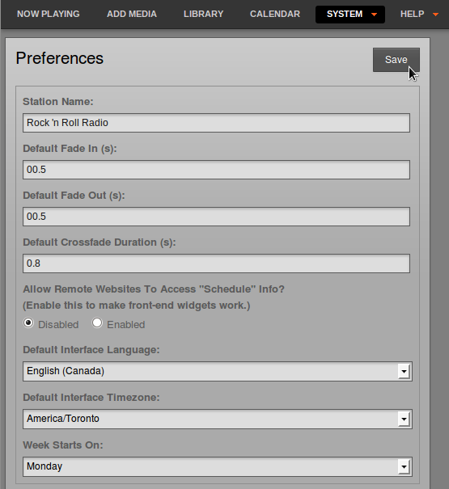

LibreTime has a feature which enables your station's show and schedule information to be displayed on remote websites. This feature is included in LibreTime because you would not usually invite the general public to access your LibreTime server directly. If you had very large numbers of people requesting data from the LibreTime server at once, the burst of network traffic might overload the server, potentially disrupting your broadcasts. If carried out maliciously, this network overload is known as a denial of service attack.
Instead, your public-facing web server can retrieve the schedule information from the LibreTime API. This information can then be displayed on your broadcast station or affiliate websites by a content management system, such as Sourcefabric's Newscoop (http://newscoop.sourcefabric.org/). It can be presented using Javascript widgets and styled with CSS, in any format that you require. The Broadcaster theme for Newscoop (https://github.com/newscoop/theme-Broadcaster) integrates these widgets with ready-to-use styles.
There are two kinds of information that can be retrieved remotely from the LibreTime API without authentication; the metadata for the current show plus the following show (live-info), or the schedule for the current week and the week ahead (week-info). The week-info metadata includes show names, times, and individual show URLs on your public website. That way, the audience for your station can click through from the schedule information to find out more about a particular show, or download a previous show recording that you might have made available.
If your LibreTime server was accessible at https://libretime.example.com the live show information could be retrieved by your web server using this URL:
https://libretime.example.com/api/live-info/?callbackThe comma-separated text metadata returned to your web server might be something like this:
({"env":"production",
"schedulerTime":"2013-07-03 14:07:31",
"previous":{"name":"Earth, Wind & Fire - Boogie Wonderland",
"starts":"2013-07-01 22:53:00",
"ends":"2013-07-01 22:55:00",
"type":"track"},
"current":{"name":"Deodato - Also Sprach Zarathustra",
"starts":"2013-07-03 13:07:06",
"ends":"2013-07-03 13:16:05",
"media_item_played":true,
"record":0,
"type":"track"},
"next":{"id":8,
"instance_id":10,
"name":"Rock Show",
"url":"https:\/\/rock.example.com\/",
"start_timestamp":"2013-07-03 14:00:00",
"end_timestamp":"2013-07-03 15:00:00",
"starts":"2013-07-03 14:00:00",
"ends":"2013-07-03 15:00:00",
"record":0,
"type":"show"},
"currentShow":[{"start_timestamp":"2013-07-03 14:07:00",
"0":"2013-07-03 13:07:00",
"end_timestamp":"2013-07-03 15:00:00",
"1":"2013-07-03 14:00:00",
"name":"Funk Show",
"2":"Funk Show",
"id":7,
"3":7,
"instance_id":9,"4":9,
"record":0,
"5":0,
"url":"https:\/\/funk.example.com\/",
"6":"",
"starts":"2013-07-03 14:07:00",
"7":"2013-07-03 13:07:00",
"ends":"2013-07-03 15:00:00",
"8":"2013-07-03 14:00:00"}],
"nextShow":[{"id":8,
"instance_id":10,
"name":"Rock Show",
"url":"https:\/\/rock.example.com\/",
"start_timestamp":"2013-07-03 15:00:00",
"end_timestamp":"2013-07-03 16:00:00",
"starts":"2013-07-03 15:00:00",
"ends":"2013-07-03 16:00:00",
"record":0,
"type":"show"}],
"timezone":"BST",
"timezoneOffset":"3600",
"AIRTIME_API_VERSION":"1.1"})The information for the current week's schedule could be retrieved using the URL:
https://libretime.example.com/api/week-info/?callbackIn this case, the metadata returned would be in a different format from the above example, something like the following. To keep the example short, this particular schedule export only contains four shows on a Monday. A full weekly schedule export would contain a great deal more text.
({"monday":[
{"start_timestamp":"2013-07-01 12:05:00",
"end_timestamp":"2013-07-01 13:00:00",
"name":"Elvis Show",
"id":2,
"instance_id":2,
"record":0,
"url":"https:\/\/elvis.example.com\/",
"starts":"2013-07-01 12:05:00",
"ends":"2013-07-01 13:00:00"},
{"start_timestamp":"2013-07-01 13:00:00",
"end_timestamp":"2013-07-01 14:00:00",
"name":"News",
"id":3,
"instance_id":4,
"record":0,
"url":"https:\/\/news.example.com\/",
"starts":"2013-07-01 13:00:00",
"ends":"2013-07-01 14:00:00"},
{"start_timestamp":"2013-07-01 14:00:00",
"end_timestamp":"2013-07-01 15:00:00",
"name":"Funk Show",
"id":4,
"instance_id":6,
"record":0,
"url":"https:\/\/funk.example.com\/",
"starts":"2013-07-01 14:00:00",
"ends":"2013-07-01 15:00:00"},
{"start_timestamp":"2013-07-01 15:00:00",
"end_timestamp":"2013-07-01 17:30:00",
"name":"Rock Show",
"id":5,
"instance_id":7,
"record":0,
"url":"https:\/\/rock.example.com\/",
"starts":"2013-07-01 15:00:00",
"ends":"2013-07-01 17:30:00"},
],
"tuesday":[],
"wednesday":[],
"thursday":[],
"friday":[],
"saturday":[],
"sunday":[],
"AIRTIME_API_VERSION":"1.1"})If you see the message You are not allowed to access this resource when attempting to display schedule information in your web browser, log in to the LibreTime administration interface, click System in the main menu, then Preferences. Set Allow Remote Websites To Access "Schedule" Info? to Enabled, click the Save button, then refresh the browser window opened on the schedule export URL. If you do not wish to make schedule information available to the public, set this option to Disabled instead.

Caching schedule information
If the LibreTime server is behind a firewall, or you want to protect the LibreTime server from large numbers of schedule requests, you may wish to cache the schedule information on a public-facing or intermediate server. You can then create a firewall rule that only allows the schedule server to connect to the LibreTime server, in addition to any remote users of the LibreTime web interface.
Your system administrator can set up schedule caching on a standard Apache and PHP enabled web server with the curl program installed, using the following steps:
-
Create a shell script on the schedule server (schedule.example.com) that polls the remote LibreTime server (libretime.example.com), and writes the metadata returned into a pair of local temporary files:
sudo nano /usr/local/bin/libretime-schedule.sh
The content of this file should be like the following script, replacing libretime.example.com with the name of your LibreTime server:
#!/bin/sh
curl -s "https://libretime.example.com/api/live-info/?callback=***" > /tmp/live-info
curl -s "https://libretime.example.com/api/week-info/?callback=***" > /tmp/week-info-
Make the script executable:
sudo chmod +x /usr/local/bin/libretime-schedule.sh
-
Create an Apache VirtualHost configuration for the schedule server:
sudo nano /etc/apache2/sites-available/schedule
containing a definition like the following, replacing schedule.example.com with the name of your schedule server:
<VirtualHost *:80>
ServerName schedule.example.com
DocumentRoot /var/www/schedule/
</VirtualHost>-
In the schedule server's DocumentRoot folder, create the folders api/live-info/ and api/week-info/
sudo mkdir -p /var/www/schedule/api/live-info/ sudo mkdir -p /var/www/schedule/api/week-info/
-
Create an index.php file in the api/live-info/ folder:
sudo nano /var/www/schedule/api/live-info/index.php
containing the following code:
<?php
$filename = '/tmp/live-info'; // define here the path and name of uploaded live-info file
header('Content-Type: text/javascript');
header("Expires: Thu, 01 Jan 1970 00:00:00 GMT");
header("Cache-Control: no-store, no-cache, must-revalidate");
$callback = empty($_GET['callback']) ? null : $_GET['callback'];
$content = file_get_contents($filename);
$content = str_replace('***', $callback, $content);
echo $content;
?>-
Create an index.php file in the api/week-info/ folder:
sudo nano /var/www/schedule/api/week-info/index.php
containing the following code:
<?php
$filename = '/tmp/week-info'; // define here the path and name of uploaded week-info file
header('Content-Type: text/javascript');
header("Expires: Thu, 01 Jan 1970 00:00:00 GMT");
header("Cache-Control: no-store, no-cache, must-revalidate");
$callback = empty($_GET['callback']) ? null : $_GET['callback'];
$content = file_get_contents($filename);
$content = str_replace('***', $callback, $content);
echo $content;
?>-
Enable the new configuration and reload the Apache web server:
sudo a2ensite schedule sudo /etc/init.d/apache2 reload
-
Create a cron job to run the shell script each minute:
sudo nano /etc/cron.d/libretime-schedule
containing the line:
* * * * * www-data /usr/local/bin/libretime-schedule.shThe schedule server will now be serving the same show information as the LibreTime server, with a cache lifetime of one minute. You can adjust the cache lifetime by altering the frequency of the cron job that polls the LibreTime server.
Pushing schedule information via FTP or SSH
If there is no inbound access to the LibreTime server at all, an FTP script can be used to push cached schedule data from LibreTime to an external web server. The standard ftp command should be available on the LibreTime server and the external web server should have a suitably restricted FTP account set up. After following steps 1 and 2 above to export schedule data to a pair of temporary files on the LibreTime server, create a new script on the LibreTime server to automatically make the upload:
sudo nano /usr/local/bin/upload-schedule-data.shReplace host, user and password values with appropriate values for your external web server:
#!/bin/sh
HOST='website.example.com'
USER='ftp_user'
PASSWD='ftp_password'
ftp -n -v $HOST << EOT
user $USER $PASSWD
ascii
prompt
put /tmp/airtime-week-info
put /tmp/airtime-live-info
bye
EOTThen make the new script executable and create a cron job to launch it every minute, as in step 8 above. Steps 3 to 7 above should be carried out on the external web server so that it can convert the two temporary files uploaded via FTP into public schedule data.
If you have secure shell access (SSH) to the remote web server, you could write a script to use the secure copy command (scp) instead of ftp.